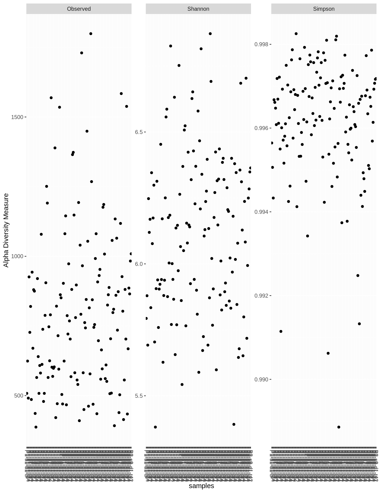

Bacterial diversity in agricultural and prairie strip soils
Jared Flater
5/18/2020
Alpha diversity is the description of the number of species and sometimes the counts within species at different sites.
Shannon diversity:
ACE diversity:
Chao1:
altstrips <- readRDS("data/all_samples_merged_STRIPS.RDS") %>%
filter_taxa(function(x) sum(x) >= 1, T)
altstrips## phyloseq-class experiment-level object
## otu_table() OTU Table: [ 103146 taxa and 1688 samples ]
## sample_data() Sample Data: [ 1688 samples by 13 sample variables ]
## tax_table() Taxonomy Table: [ 103146 taxa by 6 taxonomic ranks ]
## refseq() DNAStringSet: [ 103146 reference sequences ]data.frame(sample_sums(altstrips)) %>%
cbind(., data.frame(sample_data(altstrips))) %>%
rownames_to_column(var = "Sample") %>%
as_tibble() %>%
filter(sample_sums.altstrips. <= 10000) %T>% {print(paste0(nrow(.)," samples with less than 10k"))} %>%
ggplot(aes(x = reorder(Sample, sample_sums.altstrips.), y = sample_sums.altstrips.)) +
geom_bar(stat = "identity", aes(fill = matrix)) +
theme(axis.text.x = element_text(angle = 90, hjust = 1)) +
facet_grid(depth~experiment)## [1] "198 samples with less than 10k"
Chao1 and ACE and Shannon
Depth 1 WORLE
The first 7 cm of soil are depth one, we will compare these samples from prairie and ag portions of the plot.
Wd1 <- subset_samples(altstrips, experiment %in% "Worle_Rainfall" & manure_treatment %in% "N" & !soil_type %in% "border" & depth %in% "1") %>%
filter_taxa(function(x) sum(x) >= 1, T)
Wd1## phyloseq-class experiment-level object
## otu_table() OTU Table: [ 15725 taxa and 138 samples ]
## sample_data() Sample Data: [ 138 samples by 13 sample variables ]
## tax_table() Taxonomy Table: [ 15725 taxa by 6 taxonomic ranks ]
## refseq() DNAStringSet: [ 15725 reference sequences ]kable(data.frame(sample_data(Wd1))) %>%
kable_styling(bootstrap_options = "striped") %>%
scroll_box(width = "100%", height = "600px")| unique_id | experiment | matrix | treatment | plot | sample_day | depth | in_plot_location | block | strip | manure_treatment | soil_type | sample_num | |
|---|---|---|---|---|---|---|---|---|---|---|---|---|---|
| P1-s1-d1-b | P1-s1-d1-b | Worle_Rainfall | soil | no_manure_strip | 1 | Baseline | 1 | s1 | 1 | Y | N | crop | NA |
| P1-s1-d1-t0 | P1-s1-d1-t0 | Worle_Rainfall | soil | no_manure_strip | 1 | T000 | 1 | s1 | 1 | Y | N | crop | NA |
| P1-s1-d1-t14 | P1-s1-d1-t14 | Worle_Rainfall | soil | no_manure_strip | 1 | T014 | 1 | s1 | 1 | Y | N | crop | NA |
| P1-s1-d1-t2 | P1-s1-d1-t2 | Worle_Rainfall | soil | no_manure_strip | 1 | T002 | 1 | s1 | 1 | Y | N | crop | NA |
| P1-s1-d1-t21 | P1-s1-d1-t21 | Worle_Rainfall | soil | no_manure_strip | 1 | T021 | 1 | s1 | 1 | Y | N | crop | NA |
| P1-s1-d1-t42 | P1-s1-d1-t42 | Worle_Rainfall | soil | no_manure_strip | 1 | T042 | 1 | s1 | 1 | Y | N | crop | NA |
| P1-s2-d1-b | P1-s2-d1-b | Worle_Rainfall | soil | no_manure_strip | 1 | Baseline | 1 | s2 | 1 | Y | N | crop | NA |
| P1-s2-d1-t0 | P1-s2-d1-t0 | Worle_Rainfall | soil | no_manure_strip | 1 | T000 | 1 | s2 | 1 | Y | N | crop | NA |
| P1-s2-d1-t14 | P1-s2-d1-t14 | Worle_Rainfall | soil | no_manure_strip | 1 | T014 | 1 | s2 | 1 | Y | N | crop | NA |
| P1-s2-d1-t2 | P1-s2-d1-t2 | Worle_Rainfall | soil | no_manure_strip | 1 | T002 | 1 | s2 | 1 | Y | N | crop | NA |
| P1-s2-d1-t21 | P1-s2-d1-t21 | Worle_Rainfall | soil | no_manure_strip | 1 | T021 | 1 | s2 | 1 | Y | N | crop | NA |
| P1-s3-d1-b | P1-s3-d1-b | Worle_Rainfall | soil | no_manure_strip | 1 | Baseline | 1 | s3 | 1 | Y | N | crop | NA |
| P1-s3-d1-t0 | P1-s3-d1-t0 | Worle_Rainfall | soil | no_manure_strip | 1 | T000 | 1 | s3 | 1 | Y | N | crop | NA |
| P1-s3-d1-t14 | P1-s3-d1-t14 | Worle_Rainfall | soil | no_manure_strip | 1 | T014 | 1 | s3 | 1 | Y | N | crop | NA |
| P1-s3-d1-t2 | P1-s3-d1-t2 | Worle_Rainfall | soil | no_manure_strip | 1 | T002 | 1 | s3 | 1 | Y | N | crop | NA |
| P1-s3-d1-t21 | P1-s3-d1-t21 | Worle_Rainfall | soil | no_manure_strip | 1 | T021 | 1 | s3 | 1 | Y | N | crop | NA |
| P1-s3-d1-t42 | P1-s3-d1-t42 | Worle_Rainfall | soil | no_manure_strip | 1 | T042 | 1 | s3 | 1 | Y | N | crop | NA |
| P1-s4-d1-b | P1-s4-d1-b | Worle_Rainfall | soil | no_manure_strip | 1 | Baseline | 1 | s4 | 1 | Y | N | crop | NA |
| P1-s4-d1-t0 | P1-s4-d1-t0 | Worle_Rainfall | soil | no_manure_strip | 1 | T000 | 1 | s4 | 1 | Y | N | crop | NA |
| P1-s4-d1-t14 | P1-s4-d1-t14 | Worle_Rainfall | soil | no_manure_strip | 1 | T014 | 1 | s4 | 1 | Y | N | crop | NA |
| P1-s4-d1-t2 | P1-s4-d1-t2 | Worle_Rainfall | soil | no_manure_strip | 1 | T002 | 1 | s4 | 1 | Y | N | crop | NA |
| P1-s4-d1-t21 | P1-s4-d1-t21 | Worle_Rainfall | soil | no_manure_strip | 1 | T021 | 1 | s4 | 1 | Y | N | crop | NA |
| P1-s4-d1-t42 | P1-s4-d1-t42 | Worle_Rainfall | soil | no_manure_strip | 1 | T042 | 1 | s4 | 1 | Y | N | crop | NA |
| P1-s6-d1-b | P1-s6-d1-b | Worle_Rainfall | soil | no_manure_strip | 1 | Baseline | 1 | s6 | 1 | Y | N | strip | NA |
| P1-s6-d1-t0 | P1-s6-d1-t0 | Worle_Rainfall | soil | no_manure_strip | 1 | T000 | 1 | s6 | 1 | Y | N | strip | NA |
| P1-s6-d1-t14 | P1-s6-d1-t14 | Worle_Rainfall | soil | no_manure_strip | 1 | T014 | 1 | s6 | 1 | Y | N | strip | NA |
| P1-s6-d1-t2 | P1-s6-d1-t2 | Worle_Rainfall | soil | no_manure_strip | 1 | T002 | 1 | s6 | 1 | Y | N | strip | NA |
| P1-s6-d1-t21 | P1-s6-d1-t21 | Worle_Rainfall | soil | no_manure_strip | 1 | T021 | 1 | s6 | 1 | Y | N | strip | NA |
| P1-s6-d1-t42 | P1-s6-d1-t42 | Worle_Rainfall | soil | no_manure_strip | 1 | T042 | 1 | s6 | 1 | Y | N | strip | NA |
| P1-s7-d1-b | P1-s7-d1-b | Worle_Rainfall | soil | no_manure_strip | 1 | Baseline | 1 | s7 | 1 | Y | N | strip | NA |
| P1-s7-d1-t0 | P1-s7-d1-t0 | Worle_Rainfall | soil | no_manure_strip | 1 | T000 | 1 | s7 | 1 | Y | N | strip | NA |
| P1-s7-d1-t14 | P1-s7-d1-t14 | Worle_Rainfall | soil | no_manure_strip | 1 | T014 | 1 | s7 | 1 | Y | N | strip | NA |
| P1-s7-d1-t2 | P1-s7-d1-t2 | Worle_Rainfall | soil | no_manure_strip | 1 | T002 | 1 | s7 | 1 | Y | N | strip | NA |
| P1-s7-d1-t42 | P1-s7-d1-t42 | Worle_Rainfall | soil | no_manure_strip | 1 | T042 | 1 | s7 | 1 | Y | N | strip | NA |
| P1-s8-d1-b | P1-s8-d1-b | Worle_Rainfall | soil | no_manure_strip | 1 | Baseline | 1 | s8 | 1 | Y | N | strip | NA |
| P1-s8-d1-t0 | P1-s8-d1-t0 | Worle_Rainfall | soil | no_manure_strip | 1 | T000 | 1 | s8 | 1 | Y | N | strip | NA |
| P1-s8-d1-t14 | P1-s8-d1-t14 | Worle_Rainfall | soil | no_manure_strip | 1 | T014 | 1 | s8 | 1 | Y | N | strip | NA |
| P1-s8-d1-t2 | P1-s8-d1-t2 | Worle_Rainfall | soil | no_manure_strip | 1 | T002 | 1 | s8 | 1 | Y | N | strip | NA |
| P1-s8-d1-t21 | P1-s8-d1-t21 | Worle_Rainfall | soil | no_manure_strip | 1 | T021 | 1 | s8 | 1 | Y | N | strip | NA |
| P1-s8-d1-t42 | P1-s8-d1-t42 | Worle_Rainfall | soil | no_manure_strip | 1 | T042 | 1 | s8 | 1 | Y | N | strip | NA |
| P1-s9-d1-b | P1-s9-d1-b | Worle_Rainfall | soil | no_manure_strip | 1 | Baseline | 1 | s9 | 1 | Y | N | strip | NA |
| P1-s9-d1-t0 | P1-s9-d1-t0 | Worle_Rainfall | soil | no_manure_strip | 1 | T000 | 1 | s9 | 1 | Y | N | strip | NA |
| P1-s9-d1-t14 | P1-s9-d1-t14 | Worle_Rainfall | soil | no_manure_strip | 1 | T014 | 1 | s9 | 1 | Y | N | strip | NA |
| P1-s9-d1-t2 | P1-s9-d1-t2 | Worle_Rainfall | soil | no_manure_strip | 1 | T002 | 1 | s9 | 1 | Y | N | strip | NA |
| P1-s9-d1-t21 | P1-s9-d1-t21 | Worle_Rainfall | soil | no_manure_strip | 1 | T021 | 1 | s9 | 1 | Y | N | strip | NA |
| P1-s9-d1-t42 | P1-s9-d1-t42 | Worle_Rainfall | soil | no_manure_strip | 1 | T042 | 1 | s9 | 1 | Y | N | strip | NA |
| P2-s1-d1-b | P2-s1-d1-b | Worle_Rainfall | soil | no_manure_strip | 2 | Baseline | 1 | s1 | 2 | Y | N | crop | NA |
| P2-s1-d1-t0 | P2-s1-d1-t0 | Worle_Rainfall | soil | no_manure_strip | 2 | T000 | 1 | s1 | 2 | Y | N | crop | NA |
| P2-s1-d1-t14 | P2-s1-d1-t14 | Worle_Rainfall | soil | no_manure_strip | 2 | T014 | 1 | s1 | 2 | Y | N | crop | NA |
| P2-s1-d1-t2 | P2-s1-d1-t2 | Worle_Rainfall | soil | no_manure_strip | 2 | T002 | 1 | s1 | 2 | Y | N | crop | NA |
| P2-s1-d1-t21 | P2-s1-d1-t21 | Worle_Rainfall | soil | no_manure_strip | 2 | T021 | 1 | s1 | 2 | Y | N | crop | NA |
| P2-s1-d1-t42 | P2-s1-d1-t42 | Worle_Rainfall | soil | no_manure_strip | 2 | T042 | 1 | s1 | 2 | Y | N | crop | NA |
| P2-s2-d1-b | P2-s2-d1-b | Worle_Rainfall | soil | no_manure_strip | 2 | Baseline | 1 | s2 | 2 | Y | N | crop | NA |
| P2-s2-d1-t0 | P2-s2-d1-t0 | Worle_Rainfall | soil | no_manure_strip | 2 | T000 | 1 | s2 | 2 | Y | N | crop | NA |
| P2-s2-d1-t14 | P2-s2-d1-t14 | Worle_Rainfall | soil | no_manure_strip | 2 | T014 | 1 | s2 | 2 | Y | N | crop | NA |
| P2-s2-d1-t2 | P2-s2-d1-t2 | Worle_Rainfall | soil | no_manure_strip | 2 | T002 | 1 | s2 | 2 | Y | N | crop | NA |
| P2-s2-d1-t21 | P2-s2-d1-t21 | Worle_Rainfall | soil | no_manure_strip | 2 | T021 | 1 | s2 | 2 | Y | N | crop | NA |
| P2-s2-d1-t42 | P2-s2-d1-t42 | Worle_Rainfall | soil | no_manure_strip | 2 | T042 | 1 | s2 | 2 | Y | N | crop | NA |
| P2-s3-d1-b | P2-s3-d1-b | Worle_Rainfall | soil | no_manure_strip | 2 | Baseline | 1 | s3 | 2 | Y | N | crop | NA |
| P2-s3-d1-t0 | P2-s3-d1-t0 | Worle_Rainfall | soil | no_manure_strip | 2 | T000 | 1 | s3 | 2 | Y | N | crop | NA |
| P2-s3-d1-t14 | P2-s3-d1-t14 | Worle_Rainfall | soil | no_manure_strip | 2 | T014 | 1 | s3 | 2 | Y | N | crop | NA |
| P2-s3-d1-t2 | P2-s3-d1-t2 | Worle_Rainfall | soil | no_manure_strip | 2 | T002 | 1 | s3 | 2 | Y | N | crop | NA |
| P2-s3-d1-t21 | P2-s3-d1-t21 | Worle_Rainfall | soil | no_manure_strip | 2 | T021 | 1 | s3 | 2 | Y | N | crop | NA |
| P2-s4-d1-b | P2-s4-d1-b | Worle_Rainfall | soil | no_manure_strip | 2 | Baseline | 1 | s4 | 2 | Y | N | crop | NA |
| P2-s4-d1-t0 | P2-s4-d1-t0 | Worle_Rainfall | soil | no_manure_strip | 2 | T000 | 1 | s4 | 2 | Y | N | crop | NA |
| P2-s4-d1-t14 | P2-s4-d1-t14 | Worle_Rainfall | soil | no_manure_strip | 2 | T014 | 1 | s4 | 2 | Y | N | crop | NA |
| P2-s4-d1-t2 | P2-s4-d1-t2 | Worle_Rainfall | soil | no_manure_strip | 2 | T002 | 1 | s4 | 2 | Y | N | crop | NA |
| P2-s4-d1-t21 | P2-s4-d1-t21 | Worle_Rainfall | soil | no_manure_strip | 2 | T021 | 1 | s4 | 2 | Y | N | crop | NA |
| P2-s4-d1-t42 | P2-s4-d1-t42 | Worle_Rainfall | soil | no_manure_strip | 2 | T042 | 1 | s4 | 2 | Y | N | crop | NA |
| P2-s6-d1-b | P2-s6-d1-b | Worle_Rainfall | soil | no_manure_strip | 2 | Baseline | 1 | s6 | 2 | Y | N | strip | NA |
| P2-s6-d1-t0 | P2-s6-d1-t0 | Worle_Rainfall | soil | no_manure_strip | 2 | T000 | 1 | s6 | 2 | Y | N | strip | NA |
| P2-s6-d1-t14 | P2-s6-d1-t14 | Worle_Rainfall | soil | no_manure_strip | 2 | T014 | 1 | s6 | 2 | Y | N | strip | NA |
| P2-s6-d1-t2 | P2-s6-d1-t2 | Worle_Rainfall | soil | no_manure_strip | 2 | T002 | 1 | s6 | 2 | Y | N | strip | NA |
| P2-s6-d1-t21 | P2-s6-d1-t21 | Worle_Rainfall | soil | no_manure_strip | 2 | T021 | 1 | s6 | 2 | Y | N | strip | NA |
| P2-s6-d1-t42 | P2-s6-d1-t42 | Worle_Rainfall | soil | no_manure_strip | 2 | T042 | 1 | s6 | 2 | Y | N | strip | NA |
| P2-s7-d1-b | P2-s7-d1-b | Worle_Rainfall | soil | no_manure_strip | 2 | Baseline | 1 | s7 | 2 | Y | N | strip | NA |
| P2-s7-d1-t0 | P2-s7-d1-t0 | Worle_Rainfall | soil | no_manure_strip | 2 | T000 | 1 | s7 | 2 | Y | N | strip | NA |
| P2-s7-d1-t14 | P2-s7-d1-t14 | Worle_Rainfall | soil | no_manure_strip | 2 | T014 | 1 | s7 | 2 | Y | N | strip | NA |
| P2-s7-d1-t2 | P2-s7-d1-t2 | Worle_Rainfall | soil | no_manure_strip | 2 | T002 | 1 | s7 | 2 | Y | N | strip | NA |
| P2-s7-d1-t21 | P2-s7-d1-t21 | Worle_Rainfall | soil | no_manure_strip | 2 | T021 | 1 | s7 | 2 | Y | N | strip | NA |
| P2-s7-d1-t42 | P2-s7-d1-t42 | Worle_Rainfall | soil | no_manure_strip | 2 | T042 | 1 | s7 | 2 | Y | N | strip | NA |
| P2-s8-d1-b | P2-s8-d1-b | Worle_Rainfall | soil | no_manure_strip | 2 | Baseline | 1 | s8 | 2 | Y | N | strip | NA |
| P2-s8-d1-t0 | P2-s8-d1-t0 | Worle_Rainfall | soil | no_manure_strip | 2 | T000 | 1 | s8 | 2 | Y | N | strip | NA |
| P2-s8-d1-t14 | P2-s8-d1-t14 | Worle_Rainfall | soil | no_manure_strip | 2 | T014 | 1 | s8 | 2 | Y | N | strip | NA |
| P2-s8-d1-t2 | P2-s8-d1-t2 | Worle_Rainfall | soil | no_manure_strip | 2 | T002 | 1 | s8 | 2 | Y | N | strip | NA |
| P2-s8-d1-t21 | P2-s8-d1-t21 | Worle_Rainfall | soil | no_manure_strip | 2 | T021 | 1 | s8 | 2 | Y | N | strip | NA |
| P2-s8-d1-t42 | P2-s8-d1-t42 | Worle_Rainfall | soil | no_manure_strip | 2 | T042 | 1 | s8 | 2 | Y | N | strip | NA |
| P2-s9-d1-b | P2-s9-d1-b | Worle_Rainfall | soil | no_manure_strip | 2 | Baseline | 1 | s9 | 2 | Y | N | strip | NA |
| P2-s9-d1-t0 | P2-s9-d1-t0 | Worle_Rainfall | soil | no_manure_strip | 2 | T000 | 1 | s9 | 2 | Y | N | strip | NA |
| P2-s9-d1-t14 | P2-s9-d1-t14 | Worle_Rainfall | soil | no_manure_strip | 2 | T014 | 1 | s9 | 2 | Y | N | strip | NA |
| P2-s9-d1-t2 | P2-s9-d1-t2 | Worle_Rainfall | soil | no_manure_strip | 2 | T002 | 1 | s9 | 2 | Y | N | strip | NA |
| P2-s9-d1-t21 | P2-s9-d1-t21 | Worle_Rainfall | soil | no_manure_strip | 2 | T021 | 1 | s9 | 2 | Y | N | strip | NA |
| P3-s1-d1-b | P3-s1-d1-b | Worle_Rainfall | soil | no_manure_strip | 3 | Baseline | 1 | s1 | 3 | Y | N | crop | NA |
| P3-s1-d1-t0 | P3-s1-d1-t0 | Worle_Rainfall | soil | no_manure_strip | 3 | T000 | 1 | s1 | 3 | Y | N | crop | NA |
| P3-s1-d1-t14 | P3-s1-d1-t14 | Worle_Rainfall | soil | no_manure_strip | 3 | T014 | 1 | s1 | 3 | Y | N | crop | NA |
| P3-s1-d1-t21 | P3-s1-d1-t21 | Worle_Rainfall | soil | no_manure_strip | 3 | T021 | 1 | s1 | 3 | Y | N | crop | NA |
| P3-s1-d1-t42 | P3-s1-d1-t42 | Worle_Rainfall | soil | no_manure_strip | 3 | T042 | 1 | s1 | 3 | Y | N | crop | NA |
| P3-s2-d1-b | P3-s2-d1-b | Worle_Rainfall | soil | no_manure_strip | 3 | Baseline | 1 | s2 | 3 | Y | N | crop | NA |
| P3-s2-d1-t0 | P3-s2-d1-t0 | Worle_Rainfall | soil | no_manure_strip | 3 | T000 | 1 | s2 | 3 | Y | N | crop | NA |
| P3-s2-d1-t14 | P3-s2-d1-t14 | Worle_Rainfall | soil | no_manure_strip | 3 | T014 | 1 | s2 | 3 | Y | N | crop | NA |
| P3-s2-d1-t2 | P3-s2-d1-t2 | Worle_Rainfall | soil | no_manure_strip | 3 | T002 | 1 | s2 | 3 | Y | N | crop | NA |
| P3-s2-d1-t21 | P3-s2-d1-t21 | Worle_Rainfall | soil | no_manure_strip | 3 | T021 | 1 | s2 | 3 | Y | N | crop | NA |
| P3-s2-d1-t42 | P3-s2-d1-t42 | Worle_Rainfall | soil | no_manure_strip | 3 | T042 | 1 | s2 | 3 | Y | N | crop | NA |
| P3-s3-d1-b | P3-s3-d1-b | Worle_Rainfall | soil | no_manure_strip | 3 | Baseline | 1 | s3 | 3 | Y | N | crop | NA |
| P3-s3-d1-t0 | P3-s3-d1-t0 | Worle_Rainfall | soil | no_manure_strip | 3 | T000 | 1 | s3 | 3 | Y | N | crop | NA |
| P3-s3-d1-t14 | P3-s3-d1-t14 | Worle_Rainfall | soil | no_manure_strip | 3 | T014 | 1 | s3 | 3 | Y | N | crop | NA |
| P3-s3-d1-t2 | P3-s3-d1-t2 | Worle_Rainfall | soil | no_manure_strip | 3 | T002 | 1 | s3 | 3 | Y | N | crop | NA |
| P3-s3-d1-t21 | P3-s3-d1-t21 | Worle_Rainfall | soil | no_manure_strip | 3 | T021 | 1 | s3 | 3 | Y | N | crop | NA |
| P3-s3-d1-t42 | P3-s3-d1-t42 | Worle_Rainfall | soil | no_manure_strip | 3 | T042 | 1 | s3 | 3 | Y | N | crop | NA |
| P3-s4-d1-b | P3-s4-d1-b | Worle_Rainfall | soil | no_manure_strip | 3 | Baseline | 1 | s4 | 3 | Y | N | crop | NA |
| P3-s4-d1-t0 | P3-s4-d1-t0 | Worle_Rainfall | soil | no_manure_strip | 3 | T000 | 1 | s4 | 3 | Y | N | crop | NA |
| P3-s4-d1-t14 | P3-s4-d1-t14 | Worle_Rainfall | soil | no_manure_strip | 3 | T014 | 1 | s4 | 3 | Y | N | crop | NA |
| P3-s4-d1-t2 | P3-s4-d1-t2 | Worle_Rainfall | soil | no_manure_strip | 3 | T002 | 1 | s4 | 3 | Y | N | crop | NA |
| P3-s4-d1-t21 | P3-s4-d1-t21 | Worle_Rainfall | soil | no_manure_strip | 3 | T021 | 1 | s4 | 3 | Y | N | crop | NA |
| P3-s4-d1-t42 | P3-s4-d1-t42 | Worle_Rainfall | soil | no_manure_strip | 3 | T042 | 1 | s4 | 3 | Y | N | crop | NA |
| P3-s6-d1-b | P3-s6-d1-b | Worle_Rainfall | soil | no_manure_strip | 3 | Baseline | 1 | s6 | 3 | Y | N | strip | NA |
| P3-s6-d1-t0 | P3-s6-d1-t0 | Worle_Rainfall | soil | no_manure_strip | 3 | T000 | 1 | s6 | 3 | Y | N | strip | NA |
| P3-s6-d1-t14 | P3-s6-d1-t14 | Worle_Rainfall | soil | no_manure_strip | 3 | T014 | 1 | s6 | 3 | Y | N | strip | NA |
| P3-s6-d1-t2 | P3-s6-d1-t2 | Worle_Rainfall | soil | no_manure_strip | 3 | T002 | 1 | s6 | 3 | Y | N | strip | NA |
| P3-s6-d1-t21 | P3-s6-d1-t21 | Worle_Rainfall | soil | no_manure_strip | 3 | T021 | 1 | s6 | 3 | Y | N | strip | NA |
| P3-s6-d1-t42 | P3-s6-d1-t42 | Worle_Rainfall | soil | no_manure_strip | 3 | T042 | 1 | s6 | 3 | Y | N | strip | NA |
| P3-s7-d1-b | P3-s7-d1-b | Worle_Rainfall | soil | no_manure_strip | 3 | Baseline | 1 | s7 | 3 | Y | N | strip | NA |
| P3-s7-d1-t0 | P3-s7-d1-t0 | Worle_Rainfall | soil | no_manure_strip | 3 | T000 | 1 | s7 | 3 | Y | N | strip | NA |
| P3-s7-d1-t14 | P3-s7-d1-t14 | Worle_Rainfall | soil | no_manure_strip | 3 | T014 | 1 | s7 | 3 | Y | N | strip | NA |
| P3-s7-d1-t2 | P3-s7-d1-t2 | Worle_Rainfall | soil | no_manure_strip | 3 | T002 | 1 | s7 | 3 | Y | N | strip | NA |
| P3-s7-d1-t21 | P3-s7-d1-t21 | Worle_Rainfall | soil | no_manure_strip | 3 | T021 | 1 | s7 | 3 | Y | N | strip | NA |
| P3-s7-d1-t42 | P3-s7-d1-t42 | Worle_Rainfall | soil | no_manure_strip | 3 | T042 | 1 | s7 | 3 | Y | N | strip | NA |
| P3-s8-d1-b | P3-s8-d1-b | Worle_Rainfall | soil | no_manure_strip | 3 | Baseline | 1 | s8 | 3 | Y | N | strip | NA |
| P3-s8-d1-t0 | P3-s8-d1-t0 | Worle_Rainfall | soil | no_manure_strip | 3 | T000 | 1 | s8 | 3 | Y | N | strip | NA |
| P3-s8-d1-t14 | P3-s8-d1-t14 | Worle_Rainfall | soil | no_manure_strip | 3 | T014 | 1 | s8 | 3 | Y | N | strip | NA |
| P3-s8-d1-t2 | P3-s8-d1-t2 | Worle_Rainfall | soil | no_manure_strip | 3 | T002 | 1 | s8 | 3 | Y | N | strip | NA |
| P3-s8-d1-t21 | P3-s8-d1-t21 | Worle_Rainfall | soil | no_manure_strip | 3 | T021 | 1 | s8 | 3 | Y | N | strip | NA |
| P3-s9-d1-b | P3-s9-d1-b | Worle_Rainfall | soil | no_manure_strip | 3 | Baseline | 1 | s9 | 3 | Y | N | strip | NA |
| P3-s9-d1-t0 | P3-s9-d1-t0 | Worle_Rainfall | soil | no_manure_strip | 3 | T000 | 1 | s9 | 3 | Y | N | strip | NA |
| P3-s9-d1-t14 | P3-s9-d1-t14 | Worle_Rainfall | soil | no_manure_strip | 3 | T014 | 1 | s9 | 3 | Y | N | strip | NA |
| P3-s9-d1-t2 | P3-s9-d1-t2 | Worle_Rainfall | soil | no_manure_strip | 3 | T002 | 1 | s9 | 3 | Y | N | strip | NA |
| P3-s9-d1-t21 | P3-s9-d1-t21 | Worle_Rainfall | soil | no_manure_strip | 3 | T021 | 1 | s9 | 3 | Y | N | strip | NA |
| P3-s9-d1-t42 | P3-s9-d1-t42 | Worle_Rainfall | soil | no_manure_strip | 3 | T042 | 1 | s9 | 3 | Y | N | strip | NA |
ggpubr
ggpubr makes stats a lot easier
Let’s start by looking at the ACE diversity between crop and ag for baseline samples, before rainfall simulation. This will include all treatments.
Wdbase <- subset_samples(altstrips, experiment %in% "Worle_Rainfall" & sample_day %in% "Baseline" & !soil_type %in% "border" & depth %in% "1") %>%
filter_taxa(function(x) sum(x) >= 1, T)
sample_data(Wdbase) %>%
lapply(., factor) %>%
as_tibble() %>%
cbind(., estimate_richness(Wdbase)) %>%
ggboxplot(x = "sample_day", y = "ACE", fill = "soil_type", add = "jitter", notch = T) +
stat_compare_means(aes(group = soil_type), label = "p.signif") +
ggtitle("ACE diversity index of WORLE baseline detph 1 soils") +
ylab("ACE Diversity") +
xlab("Sampling Day") + scale_fill_viridis_d(name = "Managment", labels = c("Ag", "Prairie"))## Warning in estimate_richness(Wdbase): The data you have provided does not have
## any singletons. This is highly suspicious. Results of richness
## estimates (for example) are probably unreliable, or wrong, if you have already
## trimmed low-abundance taxa from the data.
##
## We recommended that you find the un-trimmed data and retry.
library(ggpubr)
sample_data <- sample_data(Wd1) %>%
lapply(., factor) %>%
as_tibble()
richness <- estimate_richness(Wd1)
sample_data <- cbind(sample_data, richness)
p <- ggboxplot(sample_data, x = "sample_day", y = "ACE", fill = "soil_type", add = "jitter", notch = F)
plot <- p + stat_compare_means(aes(group = soil_type), label = "p.signif") +
ggtitle("ACE diversity index of WORLE detph 1 soils") +
ylab("ACE Diversity") +
xlab("Sampling Day") + scale_fill_viridis_d(name = "Managment", labels = c("Ag", "Prairie"))
plot
ggsave("images/WorleD1ACE.png", plot = plot, device = "png", width = 6, height = 4, units = "in")We see some differences on T002, which was two days after the rainfall simulation. The added moisture likely caused an increase in bacteria. Had we measured microbial biomass carbon, I would have expected to see an increase. We could confirm the increase by using 16s primers and qPCR for these samples.
Chao1 looks very similar
p <- ggboxplot(sample_data, x = "sample_day", y = "Chao1", fill = "soil_type", add = "jitter")
plot <- p + stat_compare_means(aes(group = soil_type), label = "p.signif") +
ggtitle("Chao1 diversity index of WORLE detph 1 soils") +
ylab("Chao1 Diversity") +
xlab("Sampling Day") + scale_fill_viridis_d(name = "Managment", labels = c("Ag", "Prairie"))
plot
ggsave("images/WorleD1Chao1.png", plot = plot, device = "png", width = 6, height = 4, units = "in")p <- ggboxplot(sample_data, x = "sample_day", y = "Shannon", fill = "soil_type", add = "jitter")
plot <- p + stat_compare_means(aes(group = soil_type), label = "p.signif") +
ggtitle("Shannon diversity index of WORLE detph 1 soils") +
ylab("Shannon Diversity") +
xlab("Sampling Day") + scale_fill_viridis_d(name = "Managment", labels = c("Ag", "Prairie"))
plot
ggsave("images/WorleD1Shannon.png", plot = plot, device = "png", width = 6, height = 4, units = "in")Rarefied Diversity
Rarefaction is important for making sound judgements when comparing two sites (samples) in this case, our sequencing wasn’t even between all samples, so we are randomly re-sampling each at 10k reads. This removes a few samples that had less than 10k reads, we cannot include them in the comparison becuase the were undersampled.

rWd1 <- rarefy_even_depth(Wd1, sample.size = 10000, rngseed = 12121212, trimOTUs = T)## `set.seed(12121212)` was used to initialize repeatable random subsampling.## Please record this for your records so others can reproduce.## Try `set.seed(12121212); .Random.seed` for the full vector## ...## 14 samples removedbecause they contained fewer reads than `sample.size`.## Up to first five removed samples are:## P1-s3-d1-bP1-s3-d1-t0P1-s6-d1-bP1-s8-d1-t21P1-s9-d1-b## ...## 2313OTUs were removed because they are no longer
## present in any sample after random subsampling## ...rsample_data1 <- sample_data(rWd1) %>%
lapply(., factor) %>%
as_tibble()
richness <- estimate_richness(rWd1)
rsample_data <- cbind(rsample_data1, richness)
rm(rsample_data1)p <- ggboxplot(rsample_data, x = "sample_day", y = "Shannon", fill = "soil_type", add = "jitter")
plot <- p + stat_compare_means(aes(group = soil_type), label = "p.signif") +
ggtitle("Shannon diversity index of WORLE detph 1 soils, rarefied to 10k") +
ylab("Shannon Diversity") +
xlab("Sampling Day") + scale_fill_viridis_d(name = "Managment", labels = c("Ag", "Prairie"))
plot
ggsave("images/rWd1Shannon.png", plot = plot, device = "png", width = 6, height = 4, units = "in")Prairie and Crop Pairwise
Just prairie and crop soils pairwise comparison, we can see if any of the days were signigicantly more or less diverse than the other. The lines on the graph conncet the two samples that are being compared.
Here we can see that there is more within season change of diversity in prairie soils as compared to ag soils.
Sample day 2 and 21 have significant increases in diversity.
p <- rsample_data %>%
filter(soil_type == "strip") %>%
ggboxplot(x = "sample_day", y = "Shannon", add = "jitter")
my_comparisons <- list( c("T002", "T014"), c("T002", "T000"), c("Baseline", "T000"), c("T014", "T021"), c("T021", "T042"))
plot <- p + stat_compare_means(comparisons = my_comparisons, label = "p.signif") +
ggtitle("Shannon diversity index of WORLE detph 1 prairie soils, rarefied 10k") +
ylab("Shannon Diversity") +
xlab("Sampling Day")
plot
p <- rsample_data %>%
filter(soil_type == "crop") %>%
ggboxplot(x = "sample_day", y = "Shannon", add = "jitter")
my_comparisons <- list( c("T002", "T014"), c("T002", "T000"), c("Baseline", "T000"), c("T014", "T021"), c("T021", "T042"))
plot <- p + stat_compare_means(comparisons = my_comparisons, label = "p.signif") +
ggtitle("Shannon diversity index of WORLE detph 1 ag soils, rarefied 10k") +
ylab("Shannon Diversity") +
xlab("Sampling Day")
plot
p <- sample_data %>%
filter(soil_type == "strip") %>%
ggboxplot(x = "sample_day", y = "ACE", add = "jitter")
p
my_comparisons <- list( c("T002", "T014"), c("T002", "T000"), c("Baseline", "T000"), c("T014", "T021"), c("T021", "T042"))
plot <- p + stat_compare_means(comparisons = my_comparisons, label = "p.signif") +
ggtitle("ACE diversity index of WORLE depth 1 prairie soils") +
ylab("ACE Diversity") +
xlab("Sampling Day")
plot
Depth 2
What about the second depth of the soil samples, 7-15 cm?
Wd2 <- subset_samples(altstrips, experiment %in% "Worle_Rainfall" & manure_treatment %in% "N" & !soil_type %in% "border" & depth %in% "2") %>%
filter_taxa(function(x) sum(x) >= 2, T)
Wd2## phyloseq-class experiment-level object
## otu_table() OTU Table: [ 12871 taxa and 144 samples ]
## sample_data() Sample Data: [ 144 samples by 13 sample variables ]
## tax_table() Taxonomy Table: [ 12871 taxa by 6 taxonomic ranks ]
## refseq() DNAStringSet: [ 12871 reference sequences ]kable(data.frame(sample_data(Wd2))) %>%
kable_styling(bootstrap_options = "striped") %>%
scroll_box(width = "100%", height = "600px")| unique_id | experiment | matrix | treatment | plot | sample_day | depth | in_plot_location | block | strip | manure_treatment | soil_type | sample_num | |
|---|---|---|---|---|---|---|---|---|---|---|---|---|---|
| P1-s1-d2-t2 | P1-s1-d2-t2 | Worle_Rainfall | soil | no_manure_strip | 1 | T002 | 2 | s1 | 1 | Y | N | crop | NA |
| P1-s1-d2-b | P1-s1-d2-b | Worle_Rainfall | soil | no_manure_strip | 1 | Baseline | 2 | s1 | 1 | Y | N | crop | NA |
| P1-s1-d2-t0 | P1-s1-d2-t0 | Worle_Rainfall | soil | no_manure_strip | 1 | T000 | 2 | s1 | 1 | Y | N | crop | NA |
| P1-s1-d2-t14 | P1-s1-d2-t14 | Worle_Rainfall | soil | no_manure_strip | 1 | T014 | 2 | s1 | 1 | Y | N | crop | NA |
| P1-s1-d2-t21 | P1-s1-d2-t21 | Worle_Rainfall | soil | no_manure_strip | 1 | T021 | 2 | s1 | 1 | Y | N | crop | NA |
| P1-s1-d2-t42 | P1-s1-d2-t42 | Worle_Rainfall | soil | no_manure_strip | 1 | T042 | 2 | s1 | 1 | Y | N | crop | NA |
| P1-s2-d2-t2 | P1-s2-d2-t2 | Worle_Rainfall | soil | no_manure_strip | 1 | T002 | 2 | s2 | 1 | Y | N | crop | NA |
| P1-s2-d2-b | P1-s2-d2-b | Worle_Rainfall | soil | no_manure_strip | 1 | Baseline | 2 | s2 | 1 | Y | N | crop | NA |
| P1-s2-d2-t0 | P1-s2-d2-t0 | Worle_Rainfall | soil | no_manure_strip | 1 | T000 | 2 | s2 | 1 | Y | N | crop | NA |
| P1-s2-d2-t14 | P1-s2-d2-t14 | Worle_Rainfall | soil | no_manure_strip | 1 | T014 | 2 | s2 | 1 | Y | N | crop | NA |
| P1-s2-d2-t21 | P1-s2-d2-t21 | Worle_Rainfall | soil | no_manure_strip | 1 | T021 | 2 | s2 | 1 | Y | N | crop | NA |
| P1-s2-d2-t42 | P1-s2-d2-t42 | Worle_Rainfall | soil | no_manure_strip | 1 | T042 | 2 | s2 | 1 | Y | N | crop | NA |
| P1-s3-d2-t2 | P1-s3-d2-t2 | Worle_Rainfall | soil | no_manure_strip | 1 | T002 | 2 | s3 | 1 | Y | N | crop | NA |
| P1-s3-d2-b | P1-s3-d2-b | Worle_Rainfall | soil | no_manure_strip | 1 | Baseline | 2 | s3 | 1 | Y | N | crop | NA |
| P1-s3-d2-t0 | P1-s3-d2-t0 | Worle_Rainfall | soil | no_manure_strip | 1 | T000 | 2 | s3 | 1 | Y | N | crop | NA |
| P1-s3-d2-t14 | P1-s3-d2-t14 | Worle_Rainfall | soil | no_manure_strip | 1 | T014 | 2 | s3 | 1 | Y | N | crop | NA |
| P1-s3-d2-t21 | P1-s3-d2-t21 | Worle_Rainfall | soil | no_manure_strip | 1 | T021 | 2 | s3 | 1 | Y | N | crop | NA |
| P1-s3-d2-t42 | P1-s3-d2-t42 | Worle_Rainfall | soil | no_manure_strip | 1 | T042 | 2 | s3 | 1 | Y | N | crop | NA |
| P1-s4-d2-t2 | P1-s4-d2-t2 | Worle_Rainfall | soil | no_manure_strip | 1 | T002 | 2 | s4 | 1 | Y | N | crop | NA |
| P1-s4-d2-b | P1-s4-d2-b | Worle_Rainfall | soil | no_manure_strip | 1 | Baseline | 2 | s4 | 1 | Y | N | crop | NA |
| P1-s4-d2-t0 | P1-s4-d2-t0 | Worle_Rainfall | soil | no_manure_strip | 1 | T000 | 2 | s4 | 1 | Y | N | crop | NA |
| P1-s4-d2-t14 | P1-s4-d2-t14 | Worle_Rainfall | soil | no_manure_strip | 1 | T014 | 2 | s4 | 1 | Y | N | crop | NA |
| P1-s4-d2-t21 | P1-s4-d2-t21 | Worle_Rainfall | soil | no_manure_strip | 1 | T021 | 2 | s4 | 1 | Y | N | crop | NA |
| P1-s4-d2-t42 | P1-s4-d2-t42 | Worle_Rainfall | soil | no_manure_strip | 1 | T042 | 2 | s4 | 1 | Y | N | crop | NA |
| P1-s6-d2-b | P1-s6-d2-b | Worle_Rainfall | soil | no_manure_strip | 1 | Baseline | 2 | s6 | 1 | Y | N | strip | NA |
| P1-s6-d2-t0 | P1-s6-d2-t0 | Worle_Rainfall | soil | no_manure_strip | 1 | T000 | 2 | s6 | 1 | Y | N | strip | NA |
| P1-s6-d2-t14 | P1-s6-d2-t14 | Worle_Rainfall | soil | no_manure_strip | 1 | T014 | 2 | s6 | 1 | Y | N | strip | NA |
| P1-s6-d2-t2 | P1-s6-d2-t2 | Worle_Rainfall | soil | no_manure_strip | 1 | T002 | 2 | s6 | 1 | Y | N | strip | NA |
| P1-s6-d2-t21 | P1-s6-d2-t21 | Worle_Rainfall | soil | no_manure_strip | 1 | T021 | 2 | s6 | 1 | Y | N | strip | NA |
| P1-s6-d2-t42 | P1-s6-d2-t42 | Worle_Rainfall | soil | no_manure_strip | 1 | T042 | 2 | s6 | 1 | Y | N | strip | NA |
| P1-s7-d2-b | P1-s7-d2-b | Worle_Rainfall | soil | no_manure_strip | 1 | Baseline | 2 | s7 | 1 | Y | N | strip | NA |
| P1-s7-d2-t0 | P1-s7-d2-t0 | Worle_Rainfall | soil | no_manure_strip | 1 | T000 | 2 | s7 | 1 | Y | N | strip | NA |
| P1-s7-d2-t14 | P1-s7-d2-t14 | Worle_Rainfall | soil | no_manure_strip | 1 | T014 | 2 | s7 | 1 | Y | N | strip | NA |
| P1-s7-d2-t2 | P1-s7-d2-t2 | Worle_Rainfall | soil | no_manure_strip | 1 | T002 | 2 | s7 | 1 | Y | N | strip | NA |
| P1-s7-d2-t21 | P1-s7-d2-t21 | Worle_Rainfall | soil | no_manure_strip | 1 | T021 | 2 | s7 | 1 | Y | N | strip | NA |
| P1-s7-d2-t42 | P1-s7-d2-t42 | Worle_Rainfall | soil | no_manure_strip | 1 | T042 | 2 | s7 | 1 | Y | N | strip | NA |
| P1-s8-d2-b | P1-s8-d2-b | Worle_Rainfall | soil | no_manure_strip | 1 | Baseline | 2 | s8 | 1 | Y | N | strip | NA |
| P1-s8-d2-t0 | P1-s8-d2-t0 | Worle_Rainfall | soil | no_manure_strip | 1 | T000 | 2 | s8 | 1 | Y | N | strip | NA |
| P1-s8-d2-t14 | P1-s8-d2-t14 | Worle_Rainfall | soil | no_manure_strip | 1 | T014 | 2 | s8 | 1 | Y | N | strip | NA |
| P1-s8-d2-t2 | P1-s8-d2-t2 | Worle_Rainfall | soil | no_manure_strip | 1 | T002 | 2 | s8 | 1 | Y | N | strip | NA |
| P1-s8-d2-t21 | P1-s8-d2-t21 | Worle_Rainfall | soil | no_manure_strip | 1 | T021 | 2 | s8 | 1 | Y | N | strip | NA |
| P1-s8-d2-t42 | P1-s8-d2-t42 | Worle_Rainfall | soil | no_manure_strip | 1 | T042 | 2 | s8 | 1 | Y | N | strip | NA |
| P1-s9-d2-b | P1-s9-d2-b | Worle_Rainfall | soil | no_manure_strip | 1 | Baseline | 2 | s9 | 1 | Y | N | strip | NA |
| P1-s9-d2-t0 | P1-s9-d2-t0 | Worle_Rainfall | soil | no_manure_strip | 1 | T000 | 2 | s9 | 1 | Y | N | strip | NA |
| P1-s9-d2-t14 | P1-s9-d2-t14 | Worle_Rainfall | soil | no_manure_strip | 1 | T014 | 2 | s9 | 1 | Y | N | strip | NA |
| P1-s9-d2-t2 | P1-s9-d2-t2 | Worle_Rainfall | soil | no_manure_strip | 1 | T002 | 2 | s9 | 1 | Y | N | strip | NA |
| P1-s9-d2-t21 | P1-s9-d2-t21 | Worle_Rainfall | soil | no_manure_strip | 1 | T021 | 2 | s9 | 1 | Y | N | strip | NA |
| P1-s9-d2-t42 | P1-s9-d2-t42 | Worle_Rainfall | soil | no_manure_strip | 1 | T042 | 2 | s9 | 1 | Y | N | strip | NA |
| P2-s1-d2-b | P2-s1-d2-b | Worle_Rainfall | soil | no_manure_strip | 2 | Baseline | 2 | s1 | 2 | Y | N | crop | NA |
| P2-s1-d2-t0 | P2-s1-d2-t0 | Worle_Rainfall | soil | no_manure_strip | 2 | T000 | 2 | s1 | 2 | Y | N | crop | NA |
| P2-s1-d2-t14 | P2-s1-d2-t14 | Worle_Rainfall | soil | no_manure_strip | 2 | T014 | 2 | s1 | 2 | Y | N | crop | NA |
| P2-s1-d2-t2 | P2-s1-d2-t2 | Worle_Rainfall | soil | no_manure_strip | 2 | T002 | 2 | s1 | 2 | Y | N | crop | NA |
| P2-s1-d2-t21 | P2-s1-d2-t21 | Worle_Rainfall | soil | no_manure_strip | 2 | T021 | 2 | s1 | 2 | Y | N | crop | NA |
| P2-s1-d2-t42 | P2-s1-d2-t42 | Worle_Rainfall | soil | no_manure_strip | 2 | T042 | 2 | s1 | 2 | Y | N | crop | NA |
| P2-s2-d2-b | P2-s2-d2-b | Worle_Rainfall | soil | no_manure_strip | 2 | Baseline | 2 | s2 | 2 | Y | N | crop | NA |
| P2-s2-d2-t0 | P2-s2-d2-t0 | Worle_Rainfall | soil | no_manure_strip | 2 | T000 | 2 | s2 | 2 | Y | N | crop | NA |
| P2-s2-d2-t14 | P2-s2-d2-t14 | Worle_Rainfall | soil | no_manure_strip | 2 | T014 | 2 | s2 | 2 | Y | N | crop | NA |
| P2-s2-d2-t2 | P2-s2-d2-t2 | Worle_Rainfall | soil | no_manure_strip | 2 | T002 | 2 | s2 | 2 | Y | N | crop | NA |
| P2-s2-d2-t21 | P2-s2-d2-t21 | Worle_Rainfall | soil | no_manure_strip | 2 | T021 | 2 | s2 | 2 | Y | N | crop | NA |
| P2-s2-d2-t42 | P2-s2-d2-t42 | Worle_Rainfall | soil | no_manure_strip | 2 | T042 | 2 | s2 | 2 | Y | N | crop | NA |
| P2-s3-d2-b | P2-s3-d2-b | Worle_Rainfall | soil | no_manure_strip | 2 | Baseline | 2 | s3 | 2 | Y | N | crop | NA |
| P2-s3-d2-t0 | P2-s3-d2-t0 | Worle_Rainfall | soil | no_manure_strip | 2 | T000 | 2 | s3 | 2 | Y | N | crop | NA |
| P2-s3-d2-t14 | P2-s3-d2-t14 | Worle_Rainfall | soil | no_manure_strip | 2 | T014 | 2 | s3 | 2 | Y | N | crop | NA |
| P2-s3-d2-t2 | P2-s3-d2-t2 | Worle_Rainfall | soil | no_manure_strip | 2 | T002 | 2 | s3 | 2 | Y | N | crop | NA |
| P2-s3-d2-t21 | P2-s3-d2-t21 | Worle_Rainfall | soil | no_manure_strip | 2 | T021 | 2 | s3 | 2 | Y | N | crop | NA |
| P2-s3-d2-t42 | P2-s3-d2-t42 | Worle_Rainfall | soil | no_manure_strip | 2 | T042 | 2 | s3 | 2 | Y | N | crop | NA |
| P2-s4-d2-b | P2-s4-d2-b | Worle_Rainfall | soil | no_manure_strip | 2 | Baseline | 2 | s4 | 2 | Y | N | crop | NA |
| P2-s4-d2-t0 | P2-s4-d2-t0 | Worle_Rainfall | soil | no_manure_strip | 2 | T000 | 2 | s4 | 2 | Y | N | crop | NA |
| P2-s4-d2-t14 | P2-s4-d2-t14 | Worle_Rainfall | soil | no_manure_strip | 2 | T014 | 2 | s4 | 2 | Y | N | crop | NA |
| P2-s4-d2-t2 | P2-s4-d2-t2 | Worle_Rainfall | soil | no_manure_strip | 2 | T002 | 2 | s4 | 2 | Y | N | crop | NA |
| P2-s4-d2-t21 | P2-s4-d2-t21 | Worle_Rainfall | soil | no_manure_strip | 2 | T021 | 2 | s4 | 2 | Y | N | crop | NA |
| P2-s4-d2-t42 | P2-s4-d2-t42 | Worle_Rainfall | soil | no_manure_strip | 2 | T042 | 2 | s4 | 2 | Y | N | crop | NA |
| P2-s6-d2-b | P2-s6-d2-b | Worle_Rainfall | soil | no_manure_strip | 2 | Baseline | 2 | s6 | 2 | Y | N | strip | NA |
| P2-s6-d2-t0 | P2-s6-d2-t0 | Worle_Rainfall | soil | no_manure_strip | 2 | T000 | 2 | s6 | 2 | Y | N | strip | NA |
| P2-s6-d2-t14 | P2-s6-d2-t14 | Worle_Rainfall | soil | no_manure_strip | 2 | T014 | 2 | s6 | 2 | Y | N | strip | NA |
| P2-s6-d2-t2 | P2-s6-d2-t2 | Worle_Rainfall | soil | no_manure_strip | 2 | T002 | 2 | s6 | 2 | Y | N | strip | NA |
| P2-s6-d2-t21 | P2-s6-d2-t21 | Worle_Rainfall | soil | no_manure_strip | 2 | T021 | 2 | s6 | 2 | Y | N | strip | NA |
| P2-s6-d2-t42 | P2-s6-d2-t42 | Worle_Rainfall | soil | no_manure_strip | 2 | T042 | 2 | s6 | 2 | Y | N | strip | NA |
| P2-s7-d2-b | P2-s7-d2-b | Worle_Rainfall | soil | no_manure_strip | 2 | Baseline | 2 | s7 | 2 | Y | N | strip | NA |
| P2-s7-d2-t0 | P2-s7-d2-t0 | Worle_Rainfall | soil | no_manure_strip | 2 | T000 | 2 | s7 | 2 | Y | N | strip | NA |
| P2-s7-d2-t14 | P2-s7-d2-t14 | Worle_Rainfall | soil | no_manure_strip | 2 | T014 | 2 | s7 | 2 | Y | N | strip | NA |
| P2-s7-d2-t2 | P2-s7-d2-t2 | Worle_Rainfall | soil | no_manure_strip | 2 | T002 | 2 | s7 | 2 | Y | N | strip | NA |
| P2-s7-d2-t21 | P2-s7-d2-t21 | Worle_Rainfall | soil | no_manure_strip | 2 | T021 | 2 | s7 | 2 | Y | N | strip | NA |
| P2-s7-d2-t42 | P2-s7-d2-t42 | Worle_Rainfall | soil | no_manure_strip | 2 | T042 | 2 | s7 | 2 | Y | N | strip | NA |
| P2-s8-d2-b | P2-s8-d2-b | Worle_Rainfall | soil | no_manure_strip | 2 | Baseline | 2 | s8 | 2 | Y | N | strip | NA |
| P2-s8-d2-t0 | P2-s8-d2-t0 | Worle_Rainfall | soil | no_manure_strip | 2 | T000 | 2 | s8 | 2 | Y | N | strip | NA |
| P2-s8-d2-t14 | P2-s8-d2-t14 | Worle_Rainfall | soil | no_manure_strip | 2 | T014 | 2 | s8 | 2 | Y | N | strip | NA |
| P2-s8-d2-t2 | P2-s8-d2-t2 | Worle_Rainfall | soil | no_manure_strip | 2 | T002 | 2 | s8 | 2 | Y | N | strip | NA |
| P2-s8-d2-t21 | P2-s8-d2-t21 | Worle_Rainfall | soil | no_manure_strip | 2 | T021 | 2 | s8 | 2 | Y | N | strip | NA |
| P2-s8-d2-t42 | P2-s8-d2-t42 | Worle_Rainfall | soil | no_manure_strip | 2 | T042 | 2 | s8 | 2 | Y | N | strip | NA |
| P2-s9-d2-b | P2-s9-d2-b | Worle_Rainfall | soil | no_manure_strip | 2 | Baseline | 2 | s9 | 2 | Y | N | strip | NA |
| P2-s9-d2-t0 | P2-s9-d2-t0 | Worle_Rainfall | soil | no_manure_strip | 2 | T000 | 2 | s9 | 2 | Y | N | strip | NA |
| P2-s9-d2-t14 | P2-s9-d2-t14 | Worle_Rainfall | soil | no_manure_strip | 2 | T014 | 2 | s9 | 2 | Y | N | strip | NA |
| P2-s9-d2-t2 | P2-s9-d2-t2 | Worle_Rainfall | soil | no_manure_strip | 2 | T002 | 2 | s9 | 2 | Y | N | strip | NA |
| P2-s9-d2-t21 | P2-s9-d2-t21 | Worle_Rainfall | soil | no_manure_strip | 2 | T021 | 2 | s9 | 2 | Y | N | strip | NA |
| P2-s9-d2-t42 | P2-s9-d2-t42 | Worle_Rainfall | soil | no_manure_strip | 2 | T042 | 2 | s9 | 2 | Y | N | strip | NA |
| P3-s1-d2-b | P3-s1-d2-b | Worle_Rainfall | soil | no_manure_strip | 3 | Baseline | 2 | s1 | 3 | Y | N | crop | NA |
| P3-s1-d2-t0 | P3-s1-d2-t0 | Worle_Rainfall | soil | no_manure_strip | 3 | T000 | 2 | s1 | 3 | Y | N | crop | NA |
| P3-s1-d2-t14 | P3-s1-d2-t14 | Worle_Rainfall | soil | no_manure_strip | 3 | T014 | 2 | s1 | 3 | Y | N | crop | NA |
| P3-s1-d2-t2 | P3-s1-d2-t2 | Worle_Rainfall | soil | no_manure_strip | 3 | T002 | 2 | s1 | 3 | Y | N | crop | NA |
| P3-s1-d2-t21 | P3-s1-d2-t21 | Worle_Rainfall | soil | no_manure_strip | 3 | T021 | 2 | s1 | 3 | Y | N | crop | NA |
| P3-s1-d2-t42 | P3-s1-d2-t42 | Worle_Rainfall | soil | no_manure_strip | 3 | T042 | 2 | s1 | 3 | Y | N | crop | NA |
| P3-s2-d2-b | P3-s2-d2-b | Worle_Rainfall | soil | no_manure_strip | 3 | Baseline | 2 | s2 | 3 | Y | N | crop | NA |
| P3-s2-d2-t0 | P3-s2-d2-t0 | Worle_Rainfall | soil | no_manure_strip | 3 | T000 | 2 | s2 | 3 | Y | N | crop | NA |
| P3-s2-d2-t14 | P3-s2-d2-t14 | Worle_Rainfall | soil | no_manure_strip | 3 | T014 | 2 | s2 | 3 | Y | N | crop | NA |
| P3-s2-d2-t2 | P3-s2-d2-t2 | Worle_Rainfall | soil | no_manure_strip | 3 | T002 | 2 | s2 | 3 | Y | N | crop | NA |
| P3-s2-d2-t21 | P3-s2-d2-t21 | Worle_Rainfall | soil | no_manure_strip | 3 | T021 | 2 | s2 | 3 | Y | N | crop | NA |
| P3-s2-d2-t42 | P3-s2-d2-t42 | Worle_Rainfall | soil | no_manure_strip | 3 | T042 | 2 | s2 | 3 | Y | N | crop | NA |
| P3-s3-d2-b | P3-s3-d2-b | Worle_Rainfall | soil | no_manure_strip | 3 | Baseline | 2 | s3 | 3 | Y | N | crop | NA |
| P3-s3-d2-t0 | P3-s3-d2-t0 | Worle_Rainfall | soil | no_manure_strip | 3 | T000 | 2 | s3 | 3 | Y | N | crop | NA |
| P3-s3-d2-t14 | P3-s3-d2-t14 | Worle_Rainfall | soil | no_manure_strip | 3 | T014 | 2 | s3 | 3 | Y | N | crop | NA |
| P3-s3-d2-t2 | P3-s3-d2-t2 | Worle_Rainfall | soil | no_manure_strip | 3 | T002 | 2 | s3 | 3 | Y | N | crop | NA |
| P3-s3-d2-t21 | P3-s3-d2-t21 | Worle_Rainfall | soil | no_manure_strip | 3 | T021 | 2 | s3 | 3 | Y | N | crop | NA |
| P3-s3-d2-t42 | P3-s3-d2-t42 | Worle_Rainfall | soil | no_manure_strip | 3 | T042 | 2 | s3 | 3 | Y | N | crop | NA |
| P3-s4-d2-b | P3-s4-d2-b | Worle_Rainfall | soil | no_manure_strip | 3 | Baseline | 2 | s4 | 3 | Y | N | crop | NA |
| P3-s4-d2-t0 | P3-s4-d2-t0 | Worle_Rainfall | soil | no_manure_strip | 3 | T000 | 2 | s4 | 3 | Y | N | crop | NA |
| P3-s4-d2-t14 | P3-s4-d2-t14 | Worle_Rainfall | soil | no_manure_strip | 3 | T014 | 2 | s4 | 3 | Y | N | crop | NA |
| P3-s4-d2-t2 | P3-s4-d2-t2 | Worle_Rainfall | soil | no_manure_strip | 3 | T002 | 2 | s4 | 3 | Y | N | crop | NA |
| P3-s4-d2-t21 | P3-s4-d2-t21 | Worle_Rainfall | soil | no_manure_strip | 3 | T021 | 2 | s4 | 3 | Y | N | crop | NA |
| P3-s4-d2-t42 | P3-s4-d2-t42 | Worle_Rainfall | soil | no_manure_strip | 3 | T042 | 2 | s4 | 3 | Y | N | crop | NA |
| P3-s6-d2-b | P3-s6-d2-b | Worle_Rainfall | soil | no_manure_strip | 3 | Baseline | 2 | s6 | 3 | Y | N | strip | NA |
| P3-s6-d2-t0 | P3-s6-d2-t0 | Worle_Rainfall | soil | no_manure_strip | 3 | T000 | 2 | s6 | 3 | Y | N | strip | NA |
| P3-s6-d2-t14 | P3-s6-d2-t14 | Worle_Rainfall | soil | no_manure_strip | 3 | T014 | 2 | s6 | 3 | Y | N | strip | NA |
| P3-s6-d2-t2 | P3-s6-d2-t2 | Worle_Rainfall | soil | no_manure_strip | 3 | T002 | 2 | s6 | 3 | Y | N | strip | NA |
| P3-s6-d2-t21 | P3-s6-d2-t21 | Worle_Rainfall | soil | no_manure_strip | 3 | T021 | 2 | s6 | 3 | Y | N | strip | NA |
| P3-s6-d2-t42 | P3-s6-d2-t42 | Worle_Rainfall | soil | no_manure_strip | 3 | T042 | 2 | s6 | 3 | Y | N | strip | NA |
| P3-s7-d2-b | P3-s7-d2-b | Worle_Rainfall | soil | no_manure_strip | 3 | Baseline | 2 | s7 | 3 | Y | N | strip | NA |
| P3-s7-d2-t0 | P3-s7-d2-t0 | Worle_Rainfall | soil | no_manure_strip | 3 | T000 | 2 | s7 | 3 | Y | N | strip | NA |
| P3-s7-d2-t14 | P3-s7-d2-t14 | Worle_Rainfall | soil | no_manure_strip | 3 | T014 | 2 | s7 | 3 | Y | N | strip | NA |
| P3-s7-d2-t2 | P3-s7-d2-t2 | Worle_Rainfall | soil | no_manure_strip | 3 | T002 | 2 | s7 | 3 | Y | N | strip | NA |
| P3-s7-d2-t21 | P3-s7-d2-t21 | Worle_Rainfall | soil | no_manure_strip | 3 | T021 | 2 | s7 | 3 | Y | N | strip | NA |
| P3-s7-d2-t42 | P3-s7-d2-t42 | Worle_Rainfall | soil | no_manure_strip | 3 | T042 | 2 | s7 | 3 | Y | N | strip | NA |
| P3-s8-d2-b | P3-s8-d2-b | Worle_Rainfall | soil | no_manure_strip | 3 | Baseline | 2 | s8 | 3 | Y | N | strip | NA |
| P3-s8-d2-t0 | P3-s8-d2-t0 | Worle_Rainfall | soil | no_manure_strip | 3 | T000 | 2 | s8 | 3 | Y | N | strip | NA |
| P3-s8-d2-t14 | P3-s8-d2-t14 | Worle_Rainfall | soil | no_manure_strip | 3 | T014 | 2 | s8 | 3 | Y | N | strip | NA |
| P3-s8-d2-t2 | P3-s8-d2-t2 | Worle_Rainfall | soil | no_manure_strip | 3 | T002 | 2 | s8 | 3 | Y | N | strip | NA |
| P3-s8-d2-t21 | P3-s8-d2-t21 | Worle_Rainfall | soil | no_manure_strip | 3 | T021 | 2 | s8 | 3 | Y | N | strip | NA |
| P3-s8-d2-t42 | P3-s8-d2-t42 | Worle_Rainfall | soil | no_manure_strip | 3 | T042 | 2 | s8 | 3 | Y | N | strip | NA |
| P3-s9-d2-b | P3-s9-d2-b | Worle_Rainfall | soil | no_manure_strip | 3 | Baseline | 2 | s9 | 3 | Y | N | strip | NA |
| P3-s9-d2-t0 | P3-s9-d2-t0 | Worle_Rainfall | soil | no_manure_strip | 3 | T000 | 2 | s9 | 3 | Y | N | strip | NA |
| P3-s9-d2-t14 | P3-s9-d2-t14 | Worle_Rainfall | soil | no_manure_strip | 3 | T014 | 2 | s9 | 3 | Y | N | strip | NA |
| P3-s9-d2-t2 | P3-s9-d2-t2 | Worle_Rainfall | soil | no_manure_strip | 3 | T002 | 2 | s9 | 3 | Y | N | strip | NA |
| P3-s9-d2-t21 | P3-s9-d2-t21 | Worle_Rainfall | soil | no_manure_strip | 3 | T021 | 2 | s9 | 3 | Y | N | strip | NA |
| P3-s9-d2-t42 | P3-s9-d2-t42 | Worle_Rainfall | soil | no_manure_strip | 3 | T042 | 2 | s9 | 3 | Y | N | strip | NA |
sample_data <- sample_data(Wd2) %>%
lapply(., factor) %>%
as_tibble()
richness <- estimate_richness(Wd2) ## Warning in estimate_richness(Wd2): The data you have provided does not have
## any singletons. This is highly suspicious. Results of richness
## estimates (for example) are probably unreliable, or wrong, if you have already
## trimmed low-abundance taxa from the data.
##
## We recommended that you find the un-trimmed data and retry.sample_data <- cbind(sample_data, richness)
p <- ggboxplot(sample_data, x = "sample_day", y = "ACE", fill = "soil_type", add = "jitter")
plot <- p + stat_compare_means(aes(group = soil_type), label = "p.signif") +
ggtitle("ACE diversity index of WORLE detph 2 soils") +
ylab("ACE Diversity") +
xlab("Sampling Day") + scale_fill_viridis_d(name = "Managment", labels = c("Ag", "Prairie"))
plot
ggsave("images/WorleD2ACE.png", plot = plot, device = "png", width = 6, height = 4, units = "in")sample_data <- sample_data(Wd2) %>%
lapply(., factor) %>%
as_tibble()
richness <- estimate_richness(Wd2) ## Warning in estimate_richness(Wd2): The data you have provided does not have
## any singletons. This is highly suspicious. Results of richness
## estimates (for example) are probably unreliable, or wrong, if you have already
## trimmed low-abundance taxa from the data.
##
## We recommended that you find the un-trimmed data and retry.sample_data <- cbind(sample_data, richness)
p <- ggboxplot(sample_data, x = "sample_day", y = "Chao1", fill = "soil_type", add = "jitter")
plot <- p + stat_compare_means(aes(group = soil_type), label = "p.signif") +
ggtitle("Chao1 diversity index of WORLE detph 2 soils") +
ylab("Chao1 Diversity") +
xlab("Sampling Day") + scale_fill_viridis_d(name = "Managment", labels = c("Ag", "Prairie"))
plot
ggsave("images/WorleD2Chao1.png", plot = plot, device = "png", width = 6, height = 4, units = "in")rWd2 <- rarefy_even_depth(Wd2, sample.size = 10000, rngseed = 12121212, trimOTUs = T)## `set.seed(12121212)` was used to initialize repeatable random subsampling.## Please record this for your records so others can reproduce.## Try `set.seed(12121212); .Random.seed` for the full vector## ...## 12 samples removedbecause they contained fewer reads than `sample.size`.## Up to first five removed samples are:## P1-s4-d2-bP1-s4-d2-t14P1-s6-d2-bP1-s6-d2-t2P2-s2-d2-t0## ...## 1227OTUs were removed because they are no longer
## present in any sample after random subsampling## ...sample_data2 <- sample_data(rWd2) %>%
lapply(., factor) %>%
as_tibble()
richness <- estimate_richness(rWd2)
sample_data2 <- cbind(sample_data2, richness)
p <- ggboxplot(sample_data2, x = "sample_day", y = "Shannon", fill = "soil_type", add = "jitter")
plot <- p + stat_compare_means(aes(group = soil_type), label = "p.signif") +
ggtitle("Shannon diversity index of WORLE detph 2 soils rarefied to 10k reads") +
ylab("Shannon Diversity") +
xlab("Sampling Day") + scale_fill_viridis_d(name = "Managment", labels = c("Ag", "Prairie"))
plot
ggsave("images/WorlerD2Shannon.png", plot = plot, device = "png", width = 6, height = 4, units = "in")# sample data 2 is rarefied, this is shannon
p <- sample_data2 %>%
filter(soil_type == "strip") %>%
ggboxplot(x = "sample_day", y = "Shannon", add = "jitter")
my_comparisons <- list( c("T002", "T014"), c("T002", "T000"), c("Baseline", "T000"), c("T014", "T021"), c("T021", "T042"))
plot <- p + stat_compare_means(comparisons = my_comparisons, label = "p.signif") +
ggtitle("Shannon diversity index of WORLE detph 2 Prairie soils, rarefied to 10k") +
ylab("Shannon Diversity") +
xlab("Sampling Day")
plotp <- sample_data %>%
filter(soil_type == "strip") %>%
ggboxplot(x = "sample_day", y = "ACE", add = "jitter")
my_comparisons <- list( c("T002", "T014"), c("T002", "T000"), c("Baseline", "T000"), c("T014", "T021"), c("T021", "T042"))
plot <- p + stat_compare_means(comparisons = my_comparisons, label = "p.signif") +
ggtitle("ACE diversity index of WORLE depth 2 Prairie soils") +
ylab("ACE Diversity") +
xlab("Sampling Day")
plot## Warning in wilcox.test.default(c(442, 535, 559, 657, 598, 558, 556, 539, :
## cannot compute exact p-value with ties## Warning in wilcox.test.default(c(566, 411, 497, 803, 615, 537, 695, 617, :
## cannot compute exact p-value with ties
Armstrong Depth 1
Depth 1 over time, comparison between prairie and crop at each time
Ad1 <- subset_samples(altstrips, experiment %in% "Armstrong_Rainfall" & manure_treatment %in% "N" & !soil_type %in% "border" & depth %in% "1") %>%
filter_taxa(function(x) sum(x) >= 1, T)
Ad1## phyloseq-class experiment-level object
## otu_table() OTU Table: [ 17276 taxa and 120 samples ]
## sample_data() Sample Data: [ 120 samples by 13 sample variables ]
## tax_table() Taxonomy Table: [ 17276 taxa by 6 taxonomic ranks ]
## refseq() DNAStringSet: [ 17276 reference sequences ]kable(data.frame(sample_data(Ad1))) %>%
kable_styling(bootstrap_options = "striped") %>%
scroll_box(width = "100%", height = "600px")| unique_id | experiment | matrix | treatment | plot | sample_day | depth | in_plot_location | block | strip | manure_treatment | soil_type | sample_num | |
|---|---|---|---|---|---|---|---|---|---|---|---|---|---|
| ACS-TB-P1-S1-D1 | ACS-TB-P1-S1-D1 | Armstrong_Rainfall | soil | no_manure_strip | 1 | Baseline | 1 | s1 | 1 | Y | N | crop | 1 |
| ACS-TB-P1-S2-D1 | ACS-TB-P1-S2-D1 | Armstrong_Rainfall | soil | no_manure_strip | 1 | Baseline | 1 | s2 | 1 | Y | N | crop | 2 |
| ACS-TB-P1-S3-D1 | ACS-TB-P1-S3-D1 | Armstrong_Rainfall | soil | no_manure_strip | 1 | Baseline | 1 | s3 | 1 | Y | N | crop | 3 |
| ACS-TB-P1-S4-D1 | ACS-TB-P1-S4-D1 | Armstrong_Rainfall | soil | no_manure_strip | 1 | Baseline | 1 | s4 | 1 | Y | N | crop | 4 |
| ACS-TB-P1-S6-D1 | ACS-TB-P1-S6-D1 | Armstrong_Rainfall | soil | no_manure_strip | 1 | Baseline | 1 | s6 | 1 | Y | N | strip | 6 |
| ACS-TB-P1-S7-D1 | ACS-TB-P1-S7-D1 | Armstrong_Rainfall | soil | no_manure_strip | 1 | Baseline | 1 | s7 | 1 | Y | N | strip | 7 |
| ACS-TB-P1-S8-D1 | ACS-TB-P1-S8-D1 | Armstrong_Rainfall | soil | no_manure_strip | 1 | Baseline | 1 | s8 | 1 | Y | N | strip | 8 |
| ACS-TB-P1-S9-D1 | ACS-TB-P1-S9-D1 | Armstrong_Rainfall | soil | no_manure_strip | 1 | Baseline | 1 | s9 | 1 | Y | N | strip | 9 |
| ACS-TB-P2-S1-D1 | ACS-TB-P2-S1-D1 | Armstrong_Rainfall | soil | no_manure_strip | 2 | Baseline | 1 | s1 | 2 | Y | N | crop | 1 |
| ACS-TB-P2-S2-D1 | ACS-TB-P2-S2-D1 | Armstrong_Rainfall | soil | no_manure_strip | 2 | Baseline | 1 | s2 | 2 | Y | N | crop | 2 |
| ACS-TB-P2-S3-D1 | ACS-TB-P2-S3-D1 | Armstrong_Rainfall | soil | no_manure_strip | 2 | Baseline | 1 | s3 | 2 | Y | N | crop | 3 |
| ACS-TB-P2-S4-D1 | ACS-TB-P2-S4-D1 | Armstrong_Rainfall | soil | no_manure_strip | 2 | Baseline | 1 | s4 | 2 | Y | N | crop | 4 |
| ACS-TB-P2-S6-D1 | ACS-TB-P2-S6-D1 | Armstrong_Rainfall | soil | no_manure_strip | 2 | Baseline | 1 | s6 | 2 | Y | N | strip | 6 |
| ACS-TB-P2-S7-D1 | ACS-TB-P2-S7-D1 | Armstrong_Rainfall | soil | no_manure_strip | 2 | Baseline | 1 | s7 | 2 | Y | N | strip | 7 |
| ACS-TB-P2-S8-D1 | ACS-TB-P2-S8-D1 | Armstrong_Rainfall | soil | no_manure_strip | 2 | Baseline | 1 | s8 | 2 | Y | N | strip | 8 |
| ACS-TB-P2-S9-D1 | ACS-TB-P2-S9-D1 | Armstrong_Rainfall | soil | no_manure_strip | 2 | Baseline | 1 | s9 | 2 | Y | N | strip | 9 |
| ACS-TB-P3-S1-D1 | ACS-TB-P3-S1-D1 | Armstrong_Rainfall | soil | no_manure_strip | 3 | Baseline | 1 | s1 | 3 | Y | N | crop | 1 |
| ACS-TB-P3-S2-D1 | ACS-TB-P3-S2-D1 | Armstrong_Rainfall | soil | no_manure_strip | 3 | Baseline | 1 | s2 | 3 | Y | N | crop | 2 |
| ACS-TB-P3-S3-D1 | ACS-TB-P3-S3-D1 | Armstrong_Rainfall | soil | no_manure_strip | 3 | Baseline | 1 | s3 | 3 | Y | N | crop | 3 |
| ACS-TB-P3-S4-D1 | ACS-TB-P3-S4-D1 | Armstrong_Rainfall | soil | no_manure_strip | 3 | Baseline | 1 | s4 | 3 | Y | N | crop | 4 |
| ACS-TB-P3-S6-D1 | ACS-TB-P3-S6-D1 | Armstrong_Rainfall | soil | no_manure_strip | 3 | Baseline | 1 | s6 | 3 | Y | N | strip | 6 |
| ACS-TB-P3-S7-D1 | ACS-TB-P3-S7-D1 | Armstrong_Rainfall | soil | no_manure_strip | 3 | Baseline | 1 | s7 | 3 | Y | N | strip | 7 |
| ACS-TB-P3-S8-D1 | ACS-TB-P3-S8-D1 | Armstrong_Rainfall | soil | no_manure_strip | 3 | Baseline | 1 | s8 | 3 | Y | N | strip | 8 |
| ACS-TB-P3-S9-D1 | ACS-TB-P3-S9-D1 | Armstrong_Rainfall | soil | no_manure_strip | 3 | Baseline | 1 | s9 | 3 | Y | N | strip | 9 |
| ACS-T000-P1-S1-D1 | ACS-T000-P1-S1-D1 | Armstrong_Rainfall | soil | no_manure_strip | 1 | T000 | 1 | s1 | 1 | Y | N | crop | 1 |
| ACS-T000-P1-S2-D1 | ACS-T000-P1-S2-D1 | Armstrong_Rainfall | soil | no_manure_strip | 1 | T000 | 1 | s2 | 1 | Y | N | crop | 2 |
| ACS-T000-P1-S3-D1 | ACS-T000-P1-S3-D1 | Armstrong_Rainfall | soil | no_manure_strip | 1 | T000 | 1 | s3 | 1 | Y | N | crop | 3 |
| ACS-T000-P1-S4-D1 | ACS-T000-P1-S4-D1 | Armstrong_Rainfall | soil | no_manure_strip | 1 | T000 | 1 | s4 | 1 | Y | N | crop | 4 |
| ACS-T000-P1-S6-D1 | ACS-T000-P1-S6-D1 | Armstrong_Rainfall | soil | no_manure_strip | 1 | T000 | 1 | s6 | 1 | Y | N | strip | 6 |
| ACS-T000-P1-S7-D1 | ACS-T000-P1-S7-D1 | Armstrong_Rainfall | soil | no_manure_strip | 1 | T000 | 1 | s7 | 1 | Y | N | strip | 7 |
| ACS-T000-P1-S8-D1 | ACS-T000-P1-S8-D1 | Armstrong_Rainfall | soil | no_manure_strip | 1 | T000 | 1 | s8 | 1 | Y | N | strip | 8 |
| ACS-T000-P1-S9-D1 | ACS-T000-P1-S9-D1 | Armstrong_Rainfall | soil | no_manure_strip | 1 | T000 | 1 | s9 | 1 | Y | N | strip | 9 |
| ACS-T000-P2-S1-D1 | ACS-T000-P2-S1-D1 | Armstrong_Rainfall | soil | no_manure_strip | 2 | T000 | 1 | s1 | 2 | Y | N | crop | 1 |
| ACS-T000-P2-S2-D1 | ACS-T000-P2-S2-D1 | Armstrong_Rainfall | soil | no_manure_strip | 2 | T000 | 1 | s2 | 2 | Y | N | crop | 2 |
| ACS-T000-P2-S3-D1 | ACS-T000-P2-S3-D1 | Armstrong_Rainfall | soil | no_manure_strip | 2 | T000 | 1 | s3 | 2 | Y | N | crop | 3 |
| ACS-T000-P2-S4-D1 | ACS-T000-P2-S4-D1 | Armstrong_Rainfall | soil | no_manure_strip | 2 | T000 | 1 | s4 | 2 | Y | N | crop | 4 |
| ACS-T000-P2-S6-D1 | ACS-T000-P2-S6-D1 | Armstrong_Rainfall | soil | no_manure_strip | 2 | T000 | 1 | s6 | 2 | Y | N | strip | 6 |
| ACS-T000-P2-S7-D1 | ACS-T000-P2-S7-D1 | Armstrong_Rainfall | soil | no_manure_strip | 2 | T000 | 1 | s7 | 2 | Y | N | strip | 7 |
| ACS-T000-P2-S8-D1 | ACS-T000-P2-S8-D1 | Armstrong_Rainfall | soil | no_manure_strip | 2 | T000 | 1 | s8 | 2 | Y | N | strip | 8 |
| ACS-T000-P2-S9-D1 | ACS-T000-P2-S9-D1 | Armstrong_Rainfall | soil | no_manure_strip | 2 | T000 | 1 | s9 | 2 | Y | N | strip | 9 |
| ACS-T000-P3-S1-D1 | ACS-T000-P3-S1-D1 | Armstrong_Rainfall | soil | no_manure_strip | 3 | T000 | 1 | s1 | 3 | Y | N | crop | 1 |
| ACS-T000-P3-S2-D1 | ACS-T000-P3-S2-D1 | Armstrong_Rainfall | soil | no_manure_strip | 3 | T000 | 1 | s2 | 3 | Y | N | crop | 2 |
| ACS-T000-P3-S3-D1 | ACS-T000-P3-S3-D1 | Armstrong_Rainfall | soil | no_manure_strip | 3 | T000 | 1 | s3 | 3 | Y | N | crop | 3 |
| ACS-T000-P3-S4-D1 | ACS-T000-P3-S4-D1 | Armstrong_Rainfall | soil | no_manure_strip | 3 | T000 | 1 | s4 | 3 | Y | N | crop | 4 |
| ACS-T000-P3-S6-D1 | ACS-T000-P3-S6-D1 | Armstrong_Rainfall | soil | no_manure_strip | 3 | T000 | 1 | s6 | 3 | Y | N | strip | 6 |
| ACS-T000-P3-S7-D1 | ACS-T000-P3-S7-D1 | Armstrong_Rainfall | soil | no_manure_strip | 3 | T000 | 1 | s7 | 3 | Y | N | strip | 7 |
| ACS-T000-P3-S8-D1 | ACS-T000-P3-S8-D1 | Armstrong_Rainfall | soil | no_manure_strip | 3 | T000 | 1 | s8 | 3 | Y | N | strip | 8 |
| ACS-T000-P3-S9-D1 | ACS-T000-P3-S9-D1 | Armstrong_Rainfall | soil | no_manure_strip | 3 | T000 | 1 | s9 | 3 | Y | N | strip | 9 |
| ACS-T002-P1-S1-D1 | ACS-T002-P1-S1-D1 | Armstrong_Rainfall | soil | no_manure_strip | 1 | T002 | 1 | s1 | 1 | Y | N | crop | 1 |
| ACS-T002-P1-S2-D1 | ACS-T002-P1-S2-D1 | Armstrong_Rainfall | soil | no_manure_strip | 1 | T002 | 1 | s2 | 1 | Y | N | crop | 2 |
| ACS-T002-P1-S3-D1 | ACS-T002-P1-S3-D1 | Armstrong_Rainfall | soil | no_manure_strip | 1 | T002 | 1 | s3 | 1 | Y | N | crop | 3 |
| ACS-T002-P1-S4-D1 | ACS-T002-P1-S4-D1 | Armstrong_Rainfall | soil | no_manure_strip | 1 | T002 | 1 | s4 | 1 | Y | N | crop | 4 |
| ACS-T002-P1-S6-D1 | ACS-T002-P1-S6-D1 | Armstrong_Rainfall | soil | no_manure_strip | 1 | T002 | 1 | s6 | 1 | Y | N | strip | 6 |
| ACS-T002-P1-S7-D1 | ACS-T002-P1-S7-D1 | Armstrong_Rainfall | soil | no_manure_strip | 1 | T002 | 1 | s7 | 1 | Y | N | strip | 7 |
| ACS-T002-P1-S8-D1 | ACS-T002-P1-S8-D1 | Armstrong_Rainfall | soil | no_manure_strip | 1 | T002 | 1 | s8 | 1 | Y | N | strip | 8 |
| ACS-T002-P1-S9-D1 | ACS-T002-P1-S9-D1 | Armstrong_Rainfall | soil | no_manure_strip | 1 | T002 | 1 | s9 | 1 | Y | N | strip | 9 |
| ACS-T002-P2-S1-D1 | ACS-T002-P2-S1-D1 | Armstrong_Rainfall | soil | no_manure_strip | 2 | T002 | 1 | s1 | 2 | Y | N | crop | 1 |
| ACS-T002-P2-S2-D1 | ACS-T002-P2-S2-D1 | Armstrong_Rainfall | soil | no_manure_strip | 2 | T002 | 1 | s2 | 2 | Y | N | crop | 2 |
| ACS-T002-P2-S3-D1 | ACS-T002-P2-S3-D1 | Armstrong_Rainfall | soil | no_manure_strip | 2 | T002 | 1 | s3 | 2 | Y | N | crop | 3 |
| ACS-T002-P2-S4-D1 | ACS-T002-P2-S4-D1 | Armstrong_Rainfall | soil | no_manure_strip | 2 | T002 | 1 | s4 | 2 | Y | N | crop | 4 |
| ACS-T002-P2-S6-D1 | ACS-T002-P2-S6-D1 | Armstrong_Rainfall | soil | no_manure_strip | 2 | T002 | 1 | s6 | 2 | Y | N | strip | 6 |
| ACS-T002-P2-S7-D1 | ACS-T002-P2-S7-D1 | Armstrong_Rainfall | soil | no_manure_strip | 2 | T002 | 1 | s7 | 2 | Y | N | strip | 7 |
| ACS-T002-P2-S8-D1 | ACS-T002-P2-S8-D1 | Armstrong_Rainfall | soil | no_manure_strip | 2 | T002 | 1 | s8 | 2 | Y | N | strip | 8 |
| ACS-T002-P2-S9-D1 | ACS-T002-P2-S9-D1 | Armstrong_Rainfall | soil | no_manure_strip | 2 | T002 | 1 | s9 | 2 | Y | N | strip | 9 |
| ACS-T002-P3-S1-D1 | ACS-T002-P3-S1-D1 | Armstrong_Rainfall | soil | no_manure_strip | 3 | T002 | 1 | s1 | 3 | Y | N | crop | 1 |
| ACS-T002-P3-S2-D1 | ACS-T002-P3-S2-D1 | Armstrong_Rainfall | soil | no_manure_strip | 3 | T002 | 1 | s2 | 3 | Y | N | crop | 2 |
| ACS-T002-P3-S3-D1 | ACS-T002-P3-S3-D1 | Armstrong_Rainfall | soil | no_manure_strip | 3 | T002 | 1 | s3 | 3 | Y | N | crop | 3 |
| ACS-T002-P3-S4-D1 | ACS-T002-P3-S4-D1 | Armstrong_Rainfall | soil | no_manure_strip | 3 | T002 | 1 | s4 | 3 | Y | N | crop | 4 |
| ACS-T002-P3-S6-D1 | ACS-T002-P3-S6-D1 | Armstrong_Rainfall | soil | no_manure_strip | 3 | T002 | 1 | s6 | 3 | Y | N | strip | 6 |
| ACS-T002-P3-S7-D1 | ACS-T002-P3-S7-D1 | Armstrong_Rainfall | soil | no_manure_strip | 3 | T002 | 1 | s7 | 3 | Y | N | strip | 7 |
| ACS-T002-P3-S8-D1 | ACS-T002-P3-S8-D1 | Armstrong_Rainfall | soil | no_manure_strip | 3 | T002 | 1 | s8 | 3 | Y | N | strip | 8 |
| ACS-T002-P3-S9-D1 | ACS-T002-P3-S9-D1 | Armstrong_Rainfall | soil | no_manure_strip | 3 | T002 | 1 | s9 | 3 | Y | N | strip | 9 |
| ACS-T014-P1-S1-D1 | ACS-T014-P1-S1-D1 | Armstrong_Rainfall | soil | no_manure_strip | 1 | T014 | 1 | s1 | 1 | Y | N | crop | 1 |
| ACS-T014-P1-S2-D1 | ACS-T014-P1-S2-D1 | Armstrong_Rainfall | soil | no_manure_strip | 1 | T014 | 1 | s2 | 1 | Y | N | crop | 2 |
| ACS-T014-P1-S3-D1 | ACS-T014-P1-S3-D1 | Armstrong_Rainfall | soil | no_manure_strip | 1 | T014 | 1 | s3 | 1 | Y | N | crop | 3 |
| ACS-T014-P1-S4-D1 | ACS-T014-P1-S4-D1 | Armstrong_Rainfall | soil | no_manure_strip | 1 | T014 | 1 | s4 | 1 | Y | N | crop | 4 |
| ACS-T014-P1-S6-D1 | ACS-T014-P1-S6-D1 | Armstrong_Rainfall | soil | no_manure_strip | 1 | T014 | 1 | s6 | 1 | Y | N | strip | 6 |
| ACS-T014-P1-S7-D1 | ACS-T014-P1-S7-D1 | Armstrong_Rainfall | soil | no_manure_strip | 1 | T014 | 1 | s7 | 1 | Y | N | strip | 7 |
| ACS-T014-P1-S8-D1 | ACS-T014-P1-S8-D1 | Armstrong_Rainfall | soil | no_manure_strip | 1 | T014 | 1 | s8 | 1 | Y | N | strip | 8 |
| ACS-T014-P1-S9-D1 | ACS-T014-P1-S9-D1 | Armstrong_Rainfall | soil | no_manure_strip | 1 | T014 | 1 | s9 | 1 | Y | N | strip | 9 |
| ACS-T014-P2-S1-D1 | ACS-T014-P2-S1-D1 | Armstrong_Rainfall | soil | no_manure_strip | 2 | T014 | 1 | s1 | 2 | Y | N | crop | 1 |
| ACS-T014-P2-S2-D1 | ACS-T014-P2-S2-D1 | Armstrong_Rainfall | soil | no_manure_strip | 2 | T014 | 1 | s2 | 2 | Y | N | crop | 2 |
| ACS-T014-P2-S3-D1 | ACS-T014-P2-S3-D1 | Armstrong_Rainfall | soil | no_manure_strip | 2 | T014 | 1 | s3 | 2 | Y | N | crop | 3 |
| ACS-T014-P2-S4-D1 | ACS-T014-P2-S4-D1 | Armstrong_Rainfall | soil | no_manure_strip | 2 | T014 | 1 | s4 | 2 | Y | N | crop | 4 |
| ACS-T014-P2-S6-D1 | ACS-T014-P2-S6-D1 | Armstrong_Rainfall | soil | no_manure_strip | 2 | T014 | 1 | s6 | 2 | Y | N | strip | 6 |
| ACS-T014-P2-S7-D1 | ACS-T014-P2-S7-D1 | Armstrong_Rainfall | soil | no_manure_strip | 2 | T014 | 1 | s7 | 2 | Y | N | strip | 7 |
| ACS-T014-P2-S8-D1 | ACS-T014-P2-S8-D1 | Armstrong_Rainfall | soil | no_manure_strip | 2 | T014 | 1 | s8 | 2 | Y | N | strip | 8 |
| ACS-T014-P2-S9-D1 | ACS-T014-P2-S9-D1 | Armstrong_Rainfall | soil | no_manure_strip | 2 | T014 | 1 | s9 | 2 | Y | N | strip | 9 |
| ACS-T014-P3-S1-D1 | ACS-T014-P3-S1-D1 | Armstrong_Rainfall | soil | no_manure_strip | 3 | T014 | 1 | s1 | 3 | Y | N | crop | 1 |
| ACS-T014-P3-S2-D1 | ACS-T014-P3-S2-D1 | Armstrong_Rainfall | soil | no_manure_strip | 3 | T014 | 1 | s2 | 3 | Y | N | crop | 2 |
| ACS-T014-P3-S3-D1 | ACS-T014-P3-S3-D1 | Armstrong_Rainfall | soil | no_manure_strip | 3 | T014 | 1 | s3 | 3 | Y | N | crop | 3 |
| ACS-T014-P3-S4-D1 | ACS-T014-P3-S4-D1 | Armstrong_Rainfall | soil | no_manure_strip | 3 | T014 | 1 | s4 | 3 | Y | N | crop | 4 |
| ACS-T014-P3-S6-D1 | ACS-T014-P3-S6-D1 | Armstrong_Rainfall | soil | no_manure_strip | 3 | T014 | 1 | s6 | 3 | Y | N | strip | 6 |
| ACS-T014-P3-S7-D1 | ACS-T014-P3-S7-D1 | Armstrong_Rainfall | soil | no_manure_strip | 3 | T014 | 1 | s7 | 3 | Y | N | strip | 7 |
| ACS-T014-P3-S8-D1 | ACS-T014-P3-S8-D1 | Armstrong_Rainfall | soil | no_manure_strip | 3 | T014 | 1 | s8 | 3 | Y | N | strip | 8 |
| ACS-T014-P3-S9-D1 | ACS-T014-P3-S9-D1 | Armstrong_Rainfall | soil | no_manure_strip | 3 | T014 | 1 | s9 | 3 | Y | N | strip | 9 |
| ACS-T153-P1-S1-D1 | ACS-T153-P1-S1-D1 | Armstrong_Rainfall | soil | no_manure_strip | 1 | T153 | 1 | s1 | 1 | Y | N | crop | 1 |
| ACS-T153-P1-S2-D1 | ACS-T153-P1-S2-D1 | Armstrong_Rainfall | soil | no_manure_strip | 1 | T153 | 1 | s2 | 1 | Y | N | crop | 2 |
| ACS-T153-P1-S3-D1 | ACS-T153-P1-S3-D1 | Armstrong_Rainfall | soil | no_manure_strip | 1 | T153 | 1 | s3 | 1 | Y | N | crop | 3 |
| ACS-T153-P1-S4-D1 | ACS-T153-P1-S4-D1 | Armstrong_Rainfall | soil | no_manure_strip | 1 | T153 | 1 | s4 | 1 | Y | N | crop | 4 |
| ACS-T153-P1-S6-D1 | ACS-T153-P1-S6-D1 | Armstrong_Rainfall | soil | no_manure_strip | 1 | T153 | 1 | s6 | 1 | Y | N | strip | 6 |
| ACS-T153-P1-S7-D1 | ACS-T153-P1-S7-D1 | Armstrong_Rainfall | soil | no_manure_strip | 1 | T153 | 1 | s7 | 1 | Y | N | strip | 7 |
| ACS-T153-P1-S8-D1 | ACS-T153-P1-S8-D1 | Armstrong_Rainfall | soil | no_manure_strip | 1 | T153 | 1 | s8 | 1 | Y | N | strip | 8 |
| ACS-T153-P1-S9-D1 | ACS-T153-P1-S9-D1 | Armstrong_Rainfall | soil | no_manure_strip | 1 | T153 | 1 | s9 | 1 | Y | N | strip | 9 |
| ACS-T153-P2-S1-D1 | ACS-T153-P2-S1-D1 | Armstrong_Rainfall | soil | no_manure_strip | 2 | T153 | 1 | s1 | 2 | Y | N | crop | 1 |
| ACS-T153-P2-S2-D1 | ACS-T153-P2-S2-D1 | Armstrong_Rainfall | soil | no_manure_strip | 2 | T153 | 1 | s2 | 2 | Y | N | crop | 2 |
| ACS-T153-P2-S3-D1 | ACS-T153-P2-S3-D1 | Armstrong_Rainfall | soil | no_manure_strip | 2 | T153 | 1 | s3 | 2 | Y | N | crop | 3 |
| ACS-T153-P2-S4-D1 | ACS-T153-P2-S4-D1 | Armstrong_Rainfall | soil | no_manure_strip | 2 | T153 | 1 | s4 | 2 | Y | N | crop | 4 |
| ACS-T153-P2-S6-D1 | ACS-T153-P2-S6-D1 | Armstrong_Rainfall | soil | no_manure_strip | 2 | T153 | 1 | s6 | 2 | Y | N | strip | 6 |
| ACS-T153-P2-S7-D1 | ACS-T153-P2-S7-D1 | Armstrong_Rainfall | soil | no_manure_strip | 2 | T153 | 1 | s7 | 2 | Y | N | strip | 7 |
| ACS-T153-P2-S8-D1 | ACS-T153-P2-S8-D1 | Armstrong_Rainfall | soil | no_manure_strip | 2 | T153 | 1 | s8 | 2 | Y | N | strip | 8 |
| ACS-T153-P2-S9-D1 | ACS-T153-P2-S9-D1 | Armstrong_Rainfall | soil | no_manure_strip | 2 | T153 | 1 | s9 | 2 | Y | N | strip | 9 |
| ACS-T153-P3-S1-D1 | ACS-T153-P3-S1-D1 | Armstrong_Rainfall | soil | no_manure_strip | 3 | T153 | 1 | s1 | 3 | Y | N | crop | 1 |
| ACS-T153-P3-S2-D1 | ACS-T153-P3-S2-D1 | Armstrong_Rainfall | soil | no_manure_strip | 3 | T153 | 1 | s2 | 3 | Y | N | crop | 2 |
| ACS-T153-P3-S3-D1 | ACS-T153-P3-S3-D1 | Armstrong_Rainfall | soil | no_manure_strip | 3 | T153 | 1 | s3 | 3 | Y | N | crop | 3 |
| ACS-T153-P3-S4-D1 | ACS-T153-P3-S4-D1 | Armstrong_Rainfall | soil | no_manure_strip | 3 | T153 | 1 | s4 | 3 | Y | N | crop | 4 |
| ACS-T153-P3-S6-D1 | ACS-T153-P3-S6-D1 | Armstrong_Rainfall | soil | no_manure_strip | 3 | T153 | 1 | s6 | 3 | Y | N | strip | 6 |
| ACS-T153-P3-S7-D1 | ACS-T153-P3-S7-D1 | Armstrong_Rainfall | soil | no_manure_strip | 3 | T153 | 1 | s7 | 3 | Y | N | strip | 7 |
| ACS-T153-P3-S8-D1 | ACS-T153-P3-S8-D1 | Armstrong_Rainfall | soil | no_manure_strip | 3 | T153 | 1 | s8 | 3 | Y | N | strip | 8 |
| ACS-T153-P3-S9-D1 | ACS-T153-P3-S9-D1 | Armstrong_Rainfall | soil | no_manure_strip | 3 | T153 | 1 | s9 | 3 | Y | N | strip | 9 |